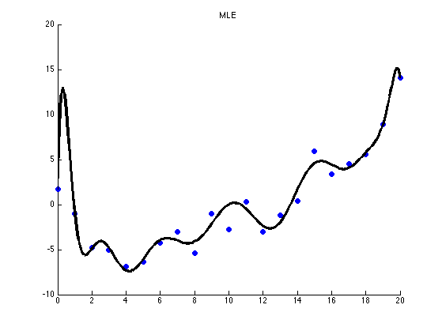
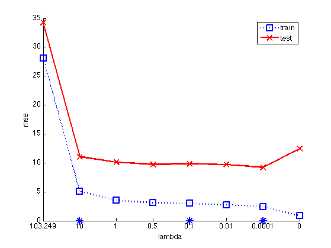
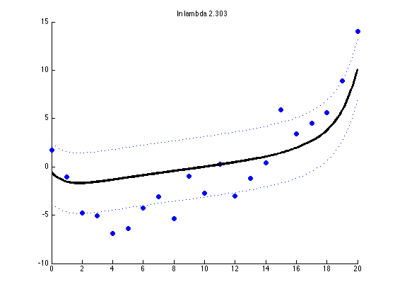
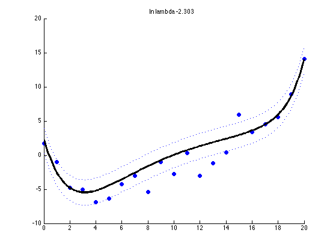
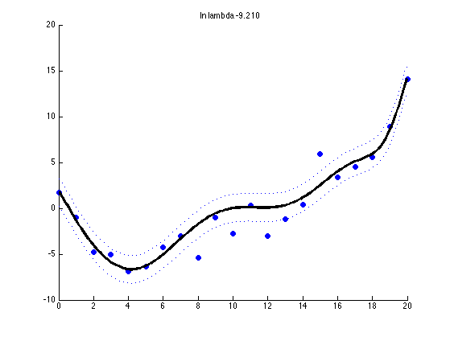

Contents
lasso on polynomial regression
ns = [21];
for n=ns(:)'
setSeed(0);
[xtrain, ytrain, xtest, ytestNoisefree, ytest, sigma2] =...
polyDataMake('sampling','thibaux','n',n);
deg = 14;
addOnes = false;
if ~addOnes
ytrain = centerCols(ytrain);
ytest = centerCols(ytest);
end
if 1
pp = preprocessorCreate('poly', deg, 'rescaleX', true, 'standardizeX', true, 'addOnes', false);
[pp, Xtrain] = preprocessorApplyToTrain(pp, xtrain);
[Xtest] = preprocessorApplyToTest(pp, xtest);
pp = preprocessorCreate( 'standardizeX', false, 'addOnes', addOnes);
else
Xtrain = xtrain; Xtest = xtest;
pp = preprocessorCreate('rescaleX', true, 'poly', deg, 'addOnes', addOnes);
end
Fit model by MLE and plot
modelOLS = linregFit(Xtrain, ytrain, 'preproc', pp);
[ypredTest] = linregPredict(modelOLS, Xtest);
figure;
scatter(xtrain, ytrain,'b','filled'); hold on;
plot(xtest, ypredTest, 'k', 'linewidth', 3);
title('MLE')

compute train/test error for each lambda using lasso
NL = 20;
lambdaMax = lambdaMaxLasso(Xtrain, centerCols(ytrain));
lambdas = [lambdaMax, 10, 1, 0.5, 0.1, 0.01, 0.0001, 0];
NL = length(lambdas);
printNdx = round(linspace(2, NL-1, 3));
testMse = zeros(1,NL); trainMse = zeros(1,NL);
D = size(Xtrain, 2);
W = zeros(NL, D);
for k=1:NL
lambda = lambdas(k);
[model] = linregFit(Xtrain, ytrain, 'lambda', lambda, ...
'regtype', 'L1', 'preproc', pp);
W(k, :) = model.w';
[ypredTest, s2] = linregPredict(model, Xtest);
ypredTrain = linregPredict(model, Xtrain);
testMse(k) = mean((ypredTest - ytest).^2);
trainMse(k) = mean((ypredTrain - ytrain).^2);
end
latextable(W)
hlam=figure; hold on
dof = 1./(lambdas+1);
ndx = 1:length(lambdas);
fs = 12;
plot(ndx, trainMse, 'bs:', 'linewidth', 2, 'markersize', 12);
plot(ndx, testMse, 'rx-', 'linewidth', 2, 'markersize', 12);
legend('train', 'test', 'location', 'northwest', 'fontsize', fs)
xlabel('lambda', 'fontsize', fs)
ylabel('mse', 'fontsize', fs)
set(gca, 'xticklabel', lambdas, 'fontsize', fs)
for i=printNdx(:)', plot(ndx(i), 0, '*', 'markersize', 12, 'linewidth', 2); end
printPmtkFigure(sprintf('linregPolyVsRegTestErrN%d', n))
\begin{tabular}{cccccccccccccc}
\hline
0.0 & 0.0 & 0.0 & 0.0 & 0.0 & 0.0 & 0.0 & 0.0 & 0.0 & 0.0 & 0.0 & 0.0 & 0.0 & 0.0 \\
6.1 & 0.0 & 0.0 & 0.0 & 0.0 & 0.4 & 0.0 & 5.4 & 0.0 & 0.0 & 0.0 & 0.0 & 0.0 & 0.0 \\
7.4 & -4.1 & 0.0 & 1.2 & -1.5 & 10.8 & 0.0 & 0.0 & 0.0 & 0.0 & 0.0 & 0.0 & 0.0 & 0.0 \\
7.7 & -9.2 & 0.0 & 15.2 & -2.1 & 1.8 & 0.0 & 0.0 & 0.0 & 0.0 & 0.0 & 0.0 & 0.2 & 0.0 \\
8.2 & -9.4 & 1.0 & 12.9 & -4.4 & 6.1 & -2.9 & 0.5 & 0.0 & -0.1 & -0.0 & 0.0 & 4.2 & -2.0 \\
5.6 & -14.6 & 13.9 & 28.4 & -13.1 & 1.9 & -12.3 & -7.6 & -1.9 & -3.5 & 4.1 & -8.4 & 10.0 & 11.8 \\
3.1 & -21.8 & 38.9 & 67.9 & -59.8 & -54.6 & -42.2 & 3.0 & 91.5 & 8.4 & 3.5 & 3.8 & -29.0 & 1.3 \\
10.6 & -151.8 & -245.6 & 2198.9 & 2647.8 & -12654.4 & -10530.4 & 36176.5 & 19319.7 & -54395.2 & -16626.9 & 41120.7 & 5431.0 & -12286.8 \\
\hline
\end{tabular}

print fitted function for certain chosen lambdas
for k=printNdx
lambda = lambdas(k);
[model] = linregFit(Xtrain, ytrain, 'lambda', lambda, 'preproc', pp);
[ypredTest, s2] = linregPredict(model, Xtest);
ypredTrain = linregPredict(model, Xtrain);
sig = sqrt(s2);
figure;
scatter(xtrain, ytrain,'b','filled');
hold on;
plot(xtest, ypredTest, 'k', 'linewidth', 3);
plot(xtest, ypredTest + sig, 'b:');
plot(xtest, ypredTest - sig, 'b:');
title(sprintf('ln lambda %5.3f', log(lambda)))
printPmtkFigure(sprintf('linregPolyVsRegFitK%dN%d', k, n))
end
  
end